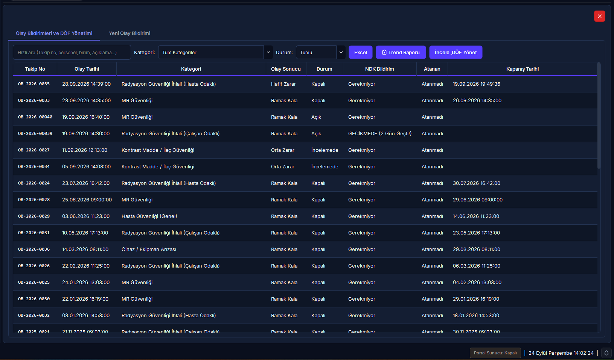
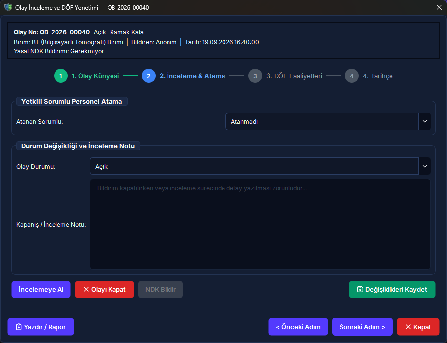
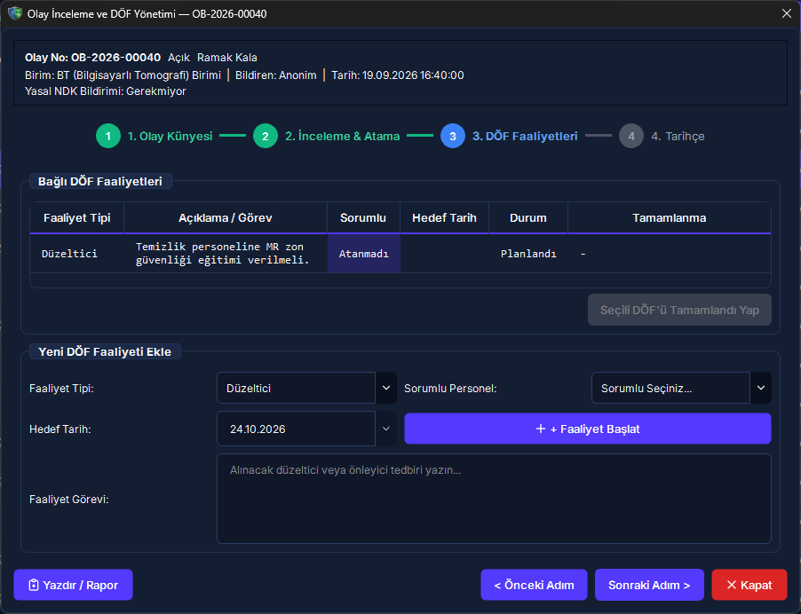
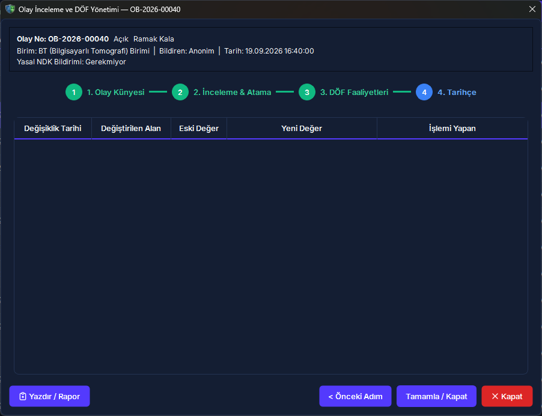

Olay Bildirimi ve DÖF (CAPA)
Radyasyon alanlarında oluşan kazaları, ramak kala olayları ve uygunsuzlukları SKS 6.1 uyumlu 3 adımlı bildirim sihirbazıyla (anonim seçenekli) kayıt altına alır; 1 ve 3 iş günlük NDK yasal süre takibini, olaya bağlı veya bağımsız DÖF yönetimini, açık DÖF kapatma emniyet kilidini ve tek sayfalık antetli resmi PDF tutanak çıktısını yönetmenizi sağlar.
Kısa Reçete: Olay Bildirimi, DÖF Takibi ve Resmi Tutanak
İstenmeyen radyolojik olayların ve ramak kala durumların yasal NDK süreleri kaçırılmadan incelenmesi, düzeltici önlemlerin tamamlanması ve tek sayfa resmi tutanakla mühürlenmesi.
Yeni Olay Bildirimi sekmesinden olayı kaydedin (veya doğrudan [Yeni DÖF Ekle] açın); [İncele ve DÖF Yönet] üzerinden 4 adımlı inceleme penceresinde sorumlu atayın, NDK bildirimini işleyin ve tüm DÖF'ler bitince [Olayı Kapat ve Tamamla] ile [Resmi Tutanağı Yazdır / PDF] adımlarını çalıştırın.
Hafta sonu ve resmi tatiller hariç tutularak 1 veya 3 iş günlük NDK süresi geri sayılır; cihaz kaynaklı olaylarda kurum içi arıza istatistik kaydı açılır; açık DÖF varken dosya kapatma engellenir.
5N1K Kural ve Arayüz Çözümleme Tablosu
Anonim bildirim, NDK yasal iş günü sayacı, bağımsız DÖF, açık DÖF kapatma kilidi ve resmi PDF tutanağı kuralları.
Kritik Sahada Yanlış Bilinen Kurallar (Mit Avcısı)
Süreç Akış Şeması
Gerekli mi?"} C -->|Evet| D["1 veya 3 İş Günü Sayacı Başlar"] C -->|Hayır| E["Kurum İçi SKS İncelemesi"] end subgraph S2 ["2. AŞAMA: 4 ADIMLI İNCELEME VE DÖF"] direction LR F["1: Künye → 2: İnceleme ve Sorumlu Atama"] --> G["3: Bağlı / Bağımsız DÖF Faaliyetleri"] G --> H{"Tüm DÖF'ler
Tamamlandı mı?"} H -->|Açık DÖF Var| I["ENGEL: Kapatma Kilitlenir"] end subgraph S3 ["3. AŞAMA: KAPANIŞ VE RESMİ TUTANAK"] direction LR J["Zorunlu Kapanış Notu & Olayı Kapat"] --> K(["Tek Sayfa Antetli Resmi A4 PDF Tutanak"]) end D & E ==> F H -->|Tamamlandı| J
- Bildirim ve NDK Süresi: Masaüstü veya sahadan anonim seçenekli 3 adımlı olay bildirimi açılır; radyolojik olaylarda hafta sonu hariç 1 veya 3 iş günlük NDK geri sayımı işler.
- 4 Adımlı İnceleme ve DÖF: Birim sorumlusu veya RKS atanıp düzeltici/önleyici faaliyetler yürütülür; açık DÖF kaldığı sürece dosya kapanışı sistem tarafından engellenir.
- Kapanış ve Resmi Tutanak: Tüm DÖF faaliyetleri bittiğinde zorunlu kapanış notuyla dosya kapatılır ve tek sayfalık antetli resmi SKS/NDK PDF tutanağı alınır.
Arayüz Ekran Görünümleri




Adım Adım İşlem Rehberi
1. Yeni Olay Bildirimi Oluşturma ve Anonim Seçenek
- [Olay Bildirimi ve DÖF (CAPA) Yönetimi] ekranında Yeni Olay Bildirimi sekmesine geçin.
- 1. Adım: Olay Temel Bilgileri bölümünde tarih, birim (gerekirse [Diğer (Serbest Yaz)]), olay sonucu ve bildireni seçin (kimliğinizi gizlemek için [Anonim Bildirim Yap] veya e-posta dönüşü için [Geri Bildirim İstiyorum] işaretleyebilirsiniz).
- [İleri] butonlarıyla 2. Adım: Olay Sınıflandırması (kategori, alt detaylar, olası kök nedenler) ve 3. Adım: Açıklamalar ve Öneriler alanlarını doldurup [Gönder / Olayı Bildir] butonuna basın.
2. 4 Adımlı İnceleme Sihirbazı, Sorumlu Atama ve DÖF Yönetimi
- Ana listeden bir satır seçip [İncele ve DÖF Yönet] butonuna tıklayın; 1. adımda olay künyesini inceleyip 2. adıma geçin, [İncelemeye Al] veya [NDK Bildir] işlemlerini yapın ve listeden yetkili sorumluyu seçin ([Sonraki Adım]'a geçerken atama otomatik kaydedilir).
- 3. adımda [Faaliyet Başlat] ile Düzeltici, Önleyici veya İyileştirici DÖF tanımlayın; tamamlanan aksiyonlarda [Seçili DÖF'ü Tamamlandı Yap] butonunu kullanın (olaydan bağımsız genel kalite iyileştirmeleri için ana araç çubuğundaki [Yeni DÖF Ekle] butonu kullanılabilir).
- 4. adımda tüm DÖF'lerin kapandığı doğrulandıktan sonra kapanış notunu yazıp [Olayı Kapat ve Tamamla] butonuna basın; [Resmi Tutanağı Yazdır / PDF] ile antetli resmi tutanağı, ana çubuktaki [Excel] ve [Trend Raporu] ile toplu analizleri alın.
3. Saha Web Portalından Olay Bildirimi ve Yönetici Analizi
- Klinik personeli cep telefonu veya tabletten Web Portalındaki 3 adımlı bildirim formunu doldurarak anında kaza veya ramak kala kaydı açabilir; kayıt açıldığı anda masaüstü yönetici ekranında görünür.
- Kalite ve hastane yönetimi Web Portalındaki Olay Bildirimi yönetim panelinden bekleyen DÖF sayılarını, NDK bildirim sürelerini ve aylık olay trendini canlı olarak takip eder.
Sıkça Sorulan Sorular (SSS)
Anonim yapılan bildirimler resmi SKS denetimlerinde geçerli sayılır mı?
Açık DÖF varken bir olayı acilen kapatmam gerekirse ne yapmalıyım?
Açık DÖF faaliyeti varken olayın kapatılması emniyet kilidiyle engellenir. Bir faaliyet artık uygulanamayacak veya mükerrer durumdaysa ilgili DÖF satırı gerekçesiyle iptal edilmeli ya da tamamlandı olarak kapatılmalı, ardından olay dosyası kapatılmalıdır.
Olaydan açılan cihaz arıza kaydı teknik servise resmi iş emri gönderir mi?
Hayır. Bu bağlantı yalnızca kurum içinde olay-arıza ilişkisini ve istatistiklerini izlemek içindir; harici bakım veya teknik servis firmasına resmi çağrı göndermez. Teknik servis ve arıza takibi Cihaz Arıza, Bakım ve QC modülünden yürütülür.
NDK yasal bildirim süresi nasıl hesaplanır?
Süre olay tarihinden itibaren başlar; acil kazalarda 1 iş günü, diğer radyolojik olaylarda 3 iş günü olarak hesaplanır. Hafta sonu günleri ve resmi tatiller iş günü hesabına dahil edilmez.